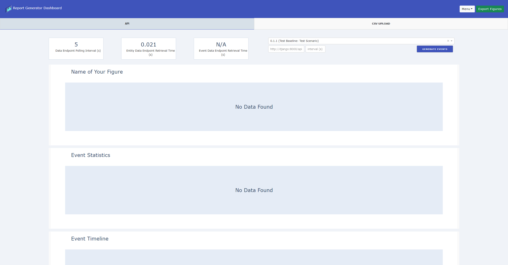

Report Generator¶
The Report Generator is web application that utilizes the Plotly Dash Python Library to generate, print, and export meaningful data visualizations.
The Report Generator is ideal for:
-
Generating data visualization to further analyze collected data with Mole.
-
Generating data visualization and analyze output as a standalone Dash app via API endpoint or CSV upload.
About the App¶
This is an interactive, multi-page report that dynamically creates figures with an API endpoint data and/or CSV data. The report also incorporates custom styling to provide distinct pages for PDF printing and the ability to export figures to static image file formats like PNG, SVG, or PDF.
Getting Started¶
Navigate to the root directory of the project and run the following command:
$ ./ml init
The Report Generator is available at http://localhost:8400 or http://localhost/report.
Tip
If Mole is running on separate machine, you can run the report as a standalone app using ./ml report.
The report generator has an input box for users to enter an API endpoint manually.
Quickstart¶
Quickly get started on creating Plotly figures with the report generator.
Create a graph function¶
Navigate to /data/graph_functions.py and create a function with the following parameters:
For figures using endpoint data, the function name must start with or contain api_.
def api_<name_of_your_figure>(endpoint, trial, font_color, plot_color, height, width):
# Perform endpoint request and create plotly figure.
title = "Name of Your Figure"
if endpoint:
data = qf.api_request(f"{endpoint}/event_data?trial={trial}")
else:
# If an endpoint is not provided on the UI, a default endpoint
# (Mole event data endpoint) will be used.
data = qf.api_request(f"{event_endpoint}?trial={trial}")
# Create a figure with the endpoint data.
# Figure placeholder
fig = empty_figure(font_color, plot_color, height, width, title)
return fig, "name_of_your_figure"
For figures using csv data, the function name must start with or contain csv_.
def csv_<name_of_your_figure>(data, filename, font_color, plot_color, height, width):
# Create plotly figure. The uploaded data is accessible through parameter 'data'.
fig = go.Figure()
# Create a figure with the csv data.
return fig, "name_of_your_figure"
Displaying the figure¶
By default, the report generator comes with two pages (tabs), api and csv. To display a figure, navigate to /pages and select the respective page. For example, to display a figure on the api page:
# /pages/api.py
def metric_layout():
"""Return graph figures that uses api data endpoints."""
return html.Div(
[
rm.create_figure(id="api_<name_of_your_figure"),
rm.create_figure(id="api_event_bar"),
rm.create_figure(id="api_event_timeline"),
],
className="row ",
style={"marginTop": "5px"},
)
Restart the report container and refresh the page to see the newly created figure.

Developer Guide¶
Inside the report_generator directory, you'll find app.py. This is where the Report Generator (Dash app)
is being executed.
Building the Report¶
The /dash directory contains the core components of the report.
-
base.pyis the base class of the Dash app. The dynamic callbacks functionality are defined in this file. -
report_modules.pyconsists of reusable report UI components such as dcc.Graph and dcc.Dropdown, or a custom Div such ashtml.Div(). -
components.pycontains all custom UI callback components.
All data querying, analysis, and visualization are located in /data directory.
-
graph_figures.pycontains functions returningplotlyfigures. -
query_functions.pycontains a reusable endpoint request function that covert endpoint data to a DataFrame. All data manipulation and analysis should be done in this file as well. -
utils.pycontains other useful data functions such as parsing CSV file.
Each tab on the Report Generator has its own file in the /pages directory. The layout.py contains the functional code to load and display all of the contents for the app.
Creating Figures via API Endpoint¶
To retrieve data from an API endpoint, the following function is used:
# /data/query_functions.py
def api_request(source):
"""Make an API GET-request and return endpoint data as a dataframe."""
r = requests.get(source)
if r.status_code == 200:
data = r.content
endpoint_data = pd.read_csv(io.StringIO(data.decode('utf-8')))
else:
endpoint_data = pd.DataFrame()
return endpoint_data
The parameter source is the endpoint. To get Mole event data, the
source is http://django:8000/api/event_data.
Note
The default configurations for request is set in config.yml.
You can also add filters to the endpoint. For example, to filter event data by
their trial_id:
source = "http://django:8000/api/event_data?trial=1"
is equivalent to:
source = f"{event_endpoint}?trial=1"
The event_endpoint is a variable set after reading the config.yml.
You can also download the endpoint data by inputting the url in your browser. More examples on Mole endpoints are found in /data/csv/mole_endpoint_examples.csv. The report generator also display these examples by default on a table figure that is found under the CSV Upload tab.
To create a figure using the endpoint data, the figure function name in graph_functions.py must start with api_:
def api_event_bar(endpoint, trial, font_color, plot_color, height, width):
fig = Go.Figure()
return figure, "name_of_figure"
The callback function for this figure will be created dynamically. This dynamically generated callback has the following inputs:
-
interval-component, fires the callback periodically based on the given polling interval set in
layout.py -
url, the current page based on the URL. Switching between Report and Dashboard will trigger the callback.
-
endpoint-session, the string returned by the endpoint input box used for manually entering an API endpoint. This string is assigned to the
endpointparamter. -
trial-selector, the value returned by the trial selector used for filtering event endpoint data. This value is assigned to the
trialparameter.
The output of the callback is figure which is a property of the Graph. Whenever
there's a change in the input, Dash calls the callback function constructs a figure object
from graph_functions, and returns it to the app.
To display this dynamically generated figure on the report, use report_modules.create_figures() on the desired page layout.
# /pages/api.py
def metric_layout():
"""Return graph figures that uses api data endpoints."""
return html.Div(
[
rm.create_figure(id="api_event_bar"),
],
className="row ",
style={"marginTop": "5px"},
)
api_event_bar.
Tip
The Report Generator comes with two sample figures. You can generate random events to Mole by clicking the GENERATE EVENT button after entering Mole credentials on the report generator dashboard. NOTE: The events generated will be posted to the current trial on Mole, not the selected trial on the report generator.
Creating Figures via CSV¶
By default, the app will automatically upload the mole_endpoint_examples.csv from /data/csv. This can be changed by modifying the DEFAULT_DATA in utils.py. There is also an option to upload your own file from the report dashboard.
To dynamically create a figure with uploaded data, the figure function name in graph_functions.py must start with csv_:
def csv_table(data, filename, font_color, plot_color, height, width):
fig = go.Figure()
return fig, "export_filename"
The dynamic callback for this CSV-figure has the following inputs:
-
url, the current page based on the URL. Switching between Print and Dashboard will trigger the callback.
-
csv-session, the data acquired from upload.
-
csv-filename-session, the filename of the uploaded data.
The output of the callback is figure which is a property of the Graph. Whenever
there's a change in the input, Dash calls the callback function constructs a figure object
from graph_functions, and returns it to the app.
Exporting Figures¶
To export figures from the Report Generator, simply click the Export button on the
dashboard. Every figure in the dashboard can be exported as long the function
in graph_functions.py has the export decorator from export.py.
To use the export decorator, create the decorator:
import report_generator.data.export as re
bulk_export = re.make_bulk_exported()
Then for any functions that create a figure, ensure that it can accept any number of parameters using args and kwargs. All figure functions with the same export call will be passed with the same set of parameters. Ensure all functions in graph_functions.py with export decorator to return a figure and title.
By default, there are two decorators in place:
-
bulk_export, this export decorator is used for exporting figures that uses endpoint data. It will export every figure for every trial.
-
export, this export decorator is used for exporting figures that uses CSV data.
# /data/graph_functions.py
@bulk_export
def example(trial, font_color, plot_color, height, width):
fig = go.Figure()
title = "Example"
fig.update_layout(
title = title
)
return fig, f"example_{trial}"
All exported figures can be found in report/exported_figures.
PDF Print/Export¶
The Report Generator comes with a dedicated page that is styled specfically for PDF exporting. This page can be found at http://localhost/report/Print. To export the report to a PDF, simply click the export button on the top right corner of the page.